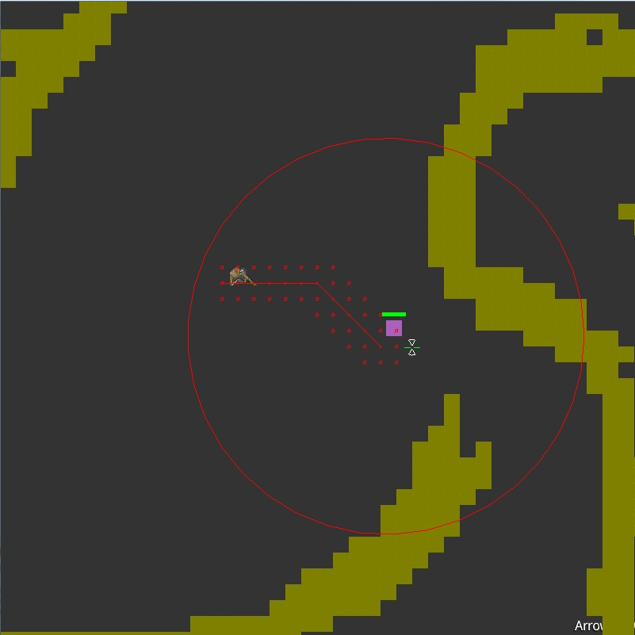
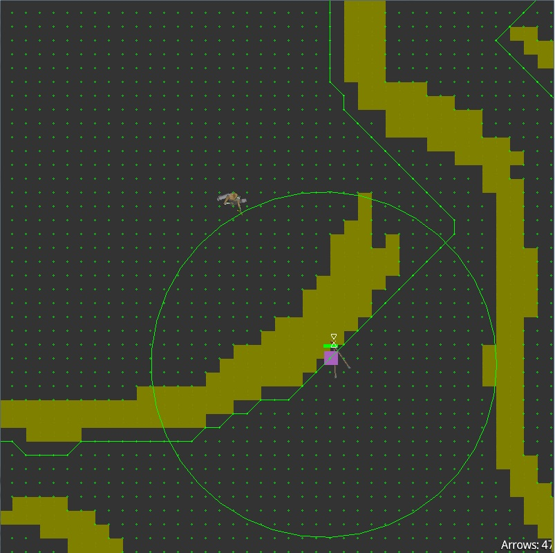

Image source: link
Factsheet
Developer:
Papathanasiou, Darryn
Founding date:
2014
Website:
ziek-za.github.io
Press / Business Contact:
PPTDAR001@myUCT.ac.za
Phone:
+27 72 5548 520
Developer Description
I am currently second year at University of Cape Town studying Computer Science and Games Development. The game which is presented below is my final project for CSC2003S which is a game development and theory course.
Game Description
Bow And Bounty
You are a bounty hunter in medieval times and through the use of bow and arrows hunt down most wanted criminals – and given the choice of capturing or killing. You are gifted with special powers which aid in your tasks. As the game progresses, opponents get harder to overcome but your powers get stronger along with your abilities to use a bow and arrow.
You begin with a simple starting bow and a single skill (or power) at its lowest level. There are two main power streams, namely nature and fire – whereby nature is the more innocent power stream and fire being the opposite.
You will receive experience points and gold from killing or capturing enemies, gold will increase your bow capabilities and experience will increase your powers and shooting abilities.
Story Line
The player’s character unknowingly comes from a long line of sorcerers and soldiers and is destined to become a powerful mixture of the two. The character has neither relatives nor the ability to maintain an ordinary job. With nothing to lose the character embarks on a mission to hunt down criminals for rewards. This is the beginning of a long career of being a bounty hunter. Once accomplishing missions the character slowly finds out who he/she truly is, as the players in game actions shape them..
In-Game screenshots
Enemy chasing the playerOnce the player gets to close to the enemy, the enemy will begin to chase the player and attack.

Enemy makings its way to the exit pointOnce the enemy finds its way to the exit point the player will lose as the enemy has succesfully escaped.

Game Features
- Shoot arrows.
- Influence arrows velocity with your own velocity/movement.
- Unique camera movement for long range shots.
- Attack and kill enemies.
- Flee enemies.
Collision Detection
Arrows and players abilities will require collision detection, apart from the main player’s movements. They will be colliding with enemies, walls and other objects or hit nothing and fall to the ground as they travel to far. The mechanics behind arrows will need to be efficient and have a natural feel as they make up a large part of the gameplay. In later levels, enemies need to have the ability to ‘out skill’ players by dodging their oncoming projectiles.
AI and Pathfinding
AI
Enemies need to be able to dodge incoming projectiles, and either attack or flee. If the player gets to close, the enemy has the ability to attack which might result in a mission failure depending on the health points of the player. Therefore it is in the player’s interest to stay back and fire from a distance.
When the enemy is fleeing, if they manage to get far enough away the mission is a failure. The enemy therefore needs to navigate through terrain effectively.
Pathfinding
Pathfinding techniques involved include A* pathfinding. This is used in enemies fleeing the player and chasing the player. Since there is a lot of obstacles involved and the need for natural movement, it was essential to implement it.
Team & Repeating Collaborators
Papathanasiou, Darryn
Head Game Developer
Contact
Head Game Developer
pptdar001@myUCT.ac.za
presskit() by Rami Ismail (Vlambeer) - also thanks to these fine folks